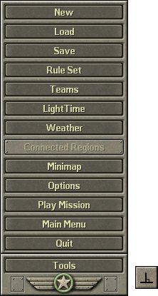
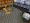
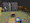
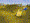
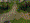
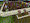
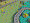

The tools menu is accessed by clicking the "Tools" button in the lower left corner of the screen, or by simply pressing T on the keyboard.
There are 14 different tools available, so let's go through each of them here.
Use this tool to create a new mission from scratch. There are two settings you can adjust when doing so:
| bedroom | kitchen | basement | sandbox | bathroom | attic | yard | livingrm |
|---|---|---|---|---|---|---|---|
|  |  |  |  |  |  |
(Note: the
This tool allows you to load a mission from the game. There are two options: "Load" and "SafeLoad".
TODO: What EXACTLY does SafeLoad do? If a unit would crash normally, does SafeLoad ignore the unit???
Missions are located in different directories depending on how they are grouped. To change which directory to load from, click on the drop down menu above the list of maps shown. By default, the Boot Camp group is selected.
This tool is used to save the current map. Once the map has been saved for the first time, using this again will simply commit any changes you have made. As stated previously, missions are located in different directories. Like before, you can change which directory to save to by clicking on the drop down menu at the top of the window. Note that new directories must be created manually with file explorer.
This tool is used to set the rule set, or "game mode" for the mission. Only multiplayer maps use rule sets in vanilla, although a single player mission can use a rule set without issue. For the base game, there are four different options to choose from:
HillTop" and keep it there for 4 minutes will win the game.
This button toggles the team editor window. Use it to create and adjust teams. It is enabled by default on startup.
See Chapter 2: Teams for more information.
This button toggles the light editor window. Use it to adjust the lighting of the world.
See Chapter 3: LightTime for more information.
This button toggles the weather editor window. Use it to create weather effects, such as rain, wind, or snow.
See Chapter 4: Weather for more information.
Is currently broken within the source code, and cannot be used. Sorry!
If it did work, it would let you view a special mini map that shows you disconnected regions of the map based on traction types.
This button toggles the mini map window. You can use it to see a quick overhead view of the entire map. Although it does not render correctly in the current version of studio, it still displays the location of units.
This button opens the options window. You can use it to adjust graphics settings, such as resolution. Unlike the main menu, this window allows you to adjust camera movement speed instead of music volume. You can also change the difficulty, which is useful for quickly playtesting them.
Press this to play the current mission. Multiplayer maps can be played this way, but they may not function as expected, so it is better to launch them naturally.
Press this to exit the studio and return to the main menu.
Press this button to close the game entirely.
{kind=link}
{kind=link}
{kind=link}
{kind=link}
{kind=link}
{kind=link}
{kind=link}
{kind=link}